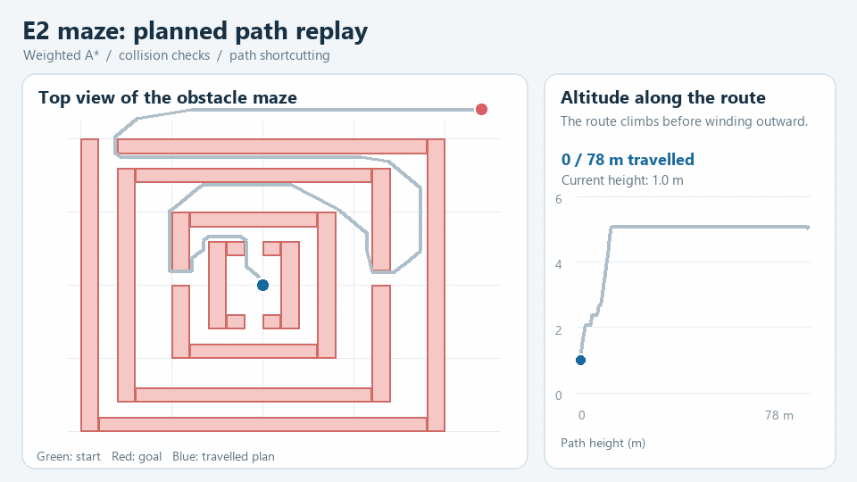
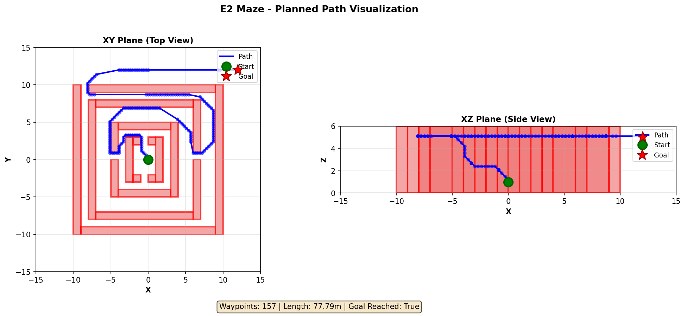
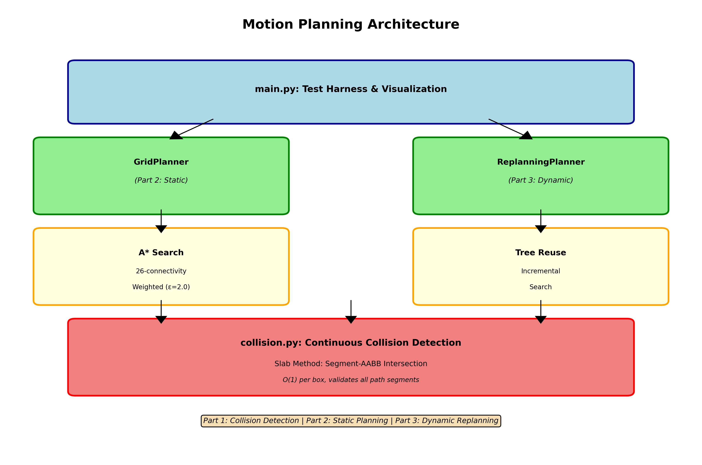
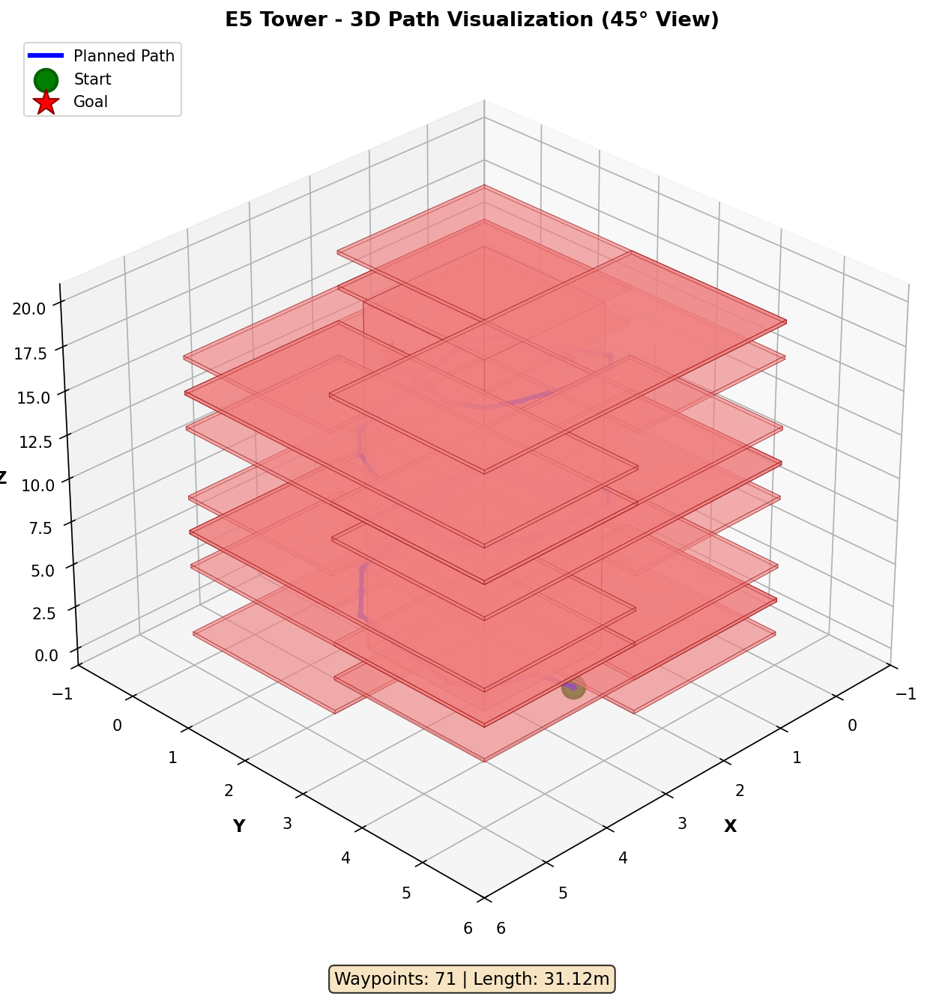

ECE 276B · PATH PLANNING
3D Motion Planning & Replanning
Find collision-checked paths through 3D box-obstacle environments and adapt when the target changes.

The project
I combined weighted A* on a 26-connected grid with continuous segment-to-box checks and shortcutting. A replanner carries search state forward as goals change.
How it works
- Search a 3D grid with a diagonal-distance heuristic and reconstruct a route.
- Check every edge and shortcut segment against axis-aligned boxes in continuous space.
- Reuse prior cost, parent, and frontier information under a time budget when the goal moves.
See the evidence
The replay shows how one route threads through the maze. The plots below show the full path and another obstacle layout.


